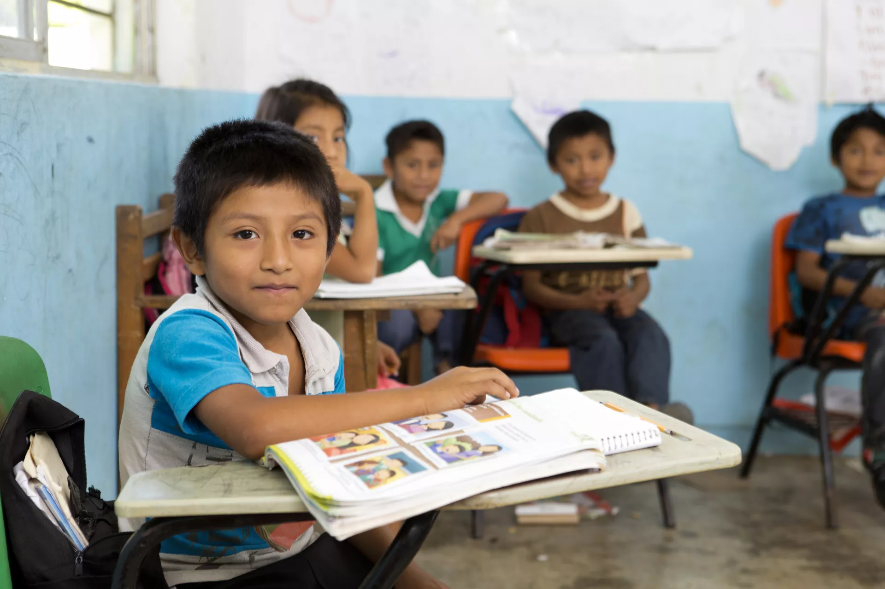

Nuestros Programas
Educación sin Barreras

Problema: Miles de niños y niñas en zonas vulnerables no tienen acceso a una educación de calidad ni a los materiales básicos para cursar el ciclo lectivo, lo que perpetúa el ciclo de pobreza.
Solución: Implementamos programas de educación inclusiva que proporcionan materiales didácticos, capacitación a docentes y apoyo logístico para garantizar el acceso a una educación de calidad en zonas rurales y marginadas.
Trayectoria: Desde 2015, hemos equipado a más de 500 escuelas y capacitado a 2.000 docentes en todo el país.
A quienes Llega: Niños, niñas y adolescentes en edad escolar de comunidades rurales y barrios populares.